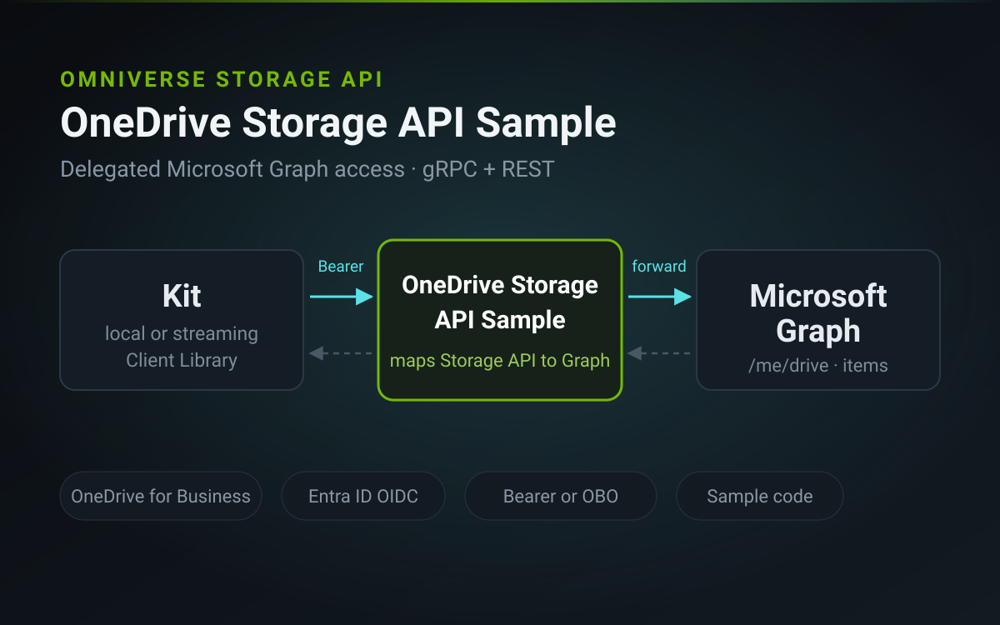

Sample
OneDrive Storage API Sample
Connect Omniverse applications to OneDrive for Business through the Omniverse Storage API, using delegated Microsoft Graph access over gRPC and REST.

The sample maps Omniverse Storage API requests to Microsoft Graph for the signed-in user.
The OneDrive Storage API Sample is a reference implementation that maps Omniverse Storage API operations to OneDrive for Business. It uses the signed-in user's delegated Microsoft Graph access token to resolve and access that user's drive. The implementation is designed not to persist user files or long-lived credentials.
The repository includes the Python service, gRPC and REST API contracts, and example Docker and Helm packaging. Use these artifacts as starting points for your own deployment, and adapt authentication, ingress, TLS, secret management, and observability to your environment.
This is a pre-release Omniverse Labs sample (version 0.2.1). APIs and configuration may change.
What you can do
- Connect each signed-in user to their OneDrive for Business
- Use supported Storage API operations through gRPC and REST
- Read, write, list, copy, move, and delete files and folders
- Upload large files through Microsoft Graph upload sessions
- Retrieve file version history
- Use bearer-token pass-through or OAuth 2.0 on-behalf-of authentication
- Start from example Docker and Helm deployment configurations
Prerequisites
- Python 3.10 or later
- The
uvpackage manager, orpip - A Microsoft Entra ID application registration
- Microsoft Graph delegated permissions for
Files.ReadWriteandUser.Read - Tenant consent according to your organization's policies
- A Microsoft 365 tenant with OneDrive for Business enabled
Fast start
From the project directory, install the service dependencies:
cd omni_onedrive_service
uv sync
Copy the example configuration and set at least AZURE_TENANT_ID and
OIDC_CLIENT_ID:
cp ../.env.example .envStart the service:
uv run omni-onedrive-storage-service onedrive
The REST endpoint listens on port 8011, and the gRPC endpoint listens on port
50051. Configure a compatible Kit application to use:
http://localhost:8011Verify the unauthenticated configuration endpoint:
curl http://localhost:8011/api/v1/auth-config
The configuration endpoint should return 200. Protected endpoints return
401 until the user signs in and supplies an access token.
The repository also includes docker-compose.yml and an example Helm chart
under helm/.
How it works
A Kit application requests /api/v1/auth-config, completes sign-in with
Microsoft Entra ID, and sends an access token with subsequent requests. The service
resolves the signed-in user's OneDrive for Business drive and translates supported Storage
API operations into Microsoft Graph requests.
The sample supports two authentication models:
- Bearer-token pass-through uses an incoming token that is already scoped for Microsoft Graph. The client application owns sign-in and token renewal.
- On-behalf-of (OBO) exchanges a token issued for the service's application audience for a Microsoft Graph access token. This model is intended for deployments in which an upstream authentication component validates tokens for the service.
OBO requires confidential-client credentials. Production deployments should provide those credentials through an approved secret-management system rather than storing them directly in deployment files.
Supported storage
- OneDrive for Business, per signed-in user — supported
- OneDrive Personal accounts — not supported
- SharePoint document libraries — not implemented in this sample
Known limitations
- The sample is configured for a single Microsoft Entra ID tenant
- Custom Storage API metadata operations are not implemented
- Concurrent writes to the same file may produce version conflicts
- OneDrive Personal accounts and SharePoint document libraries are outside the current scope
Repository path
Full source, API specifications, packaging examples, and deployment documentation are available in the project folder:
Clone and explore:
projects/ovstorage/onedrive-example/
Deployment:
Deployment guide
References:
Omniverse Storage API
·
Microsoft Graph
·
OAuth 2.0 On-Behalf-Of flow